A new branch and a pull request
quorum/your-goal-id
One branch for the meeting. Later commits move it forward, never by force. The default branch is not changed.
In Quorum, your AI specialists take turns on one goal, out loud if you like. Then take a prompt to Claude, or build it right there. You decide when it is settled.
Scroll
We have a quiet corner for a return bin and one dishwasher. Where do we start?

and round again
Each stage builds on the one before. Other specialists speak just ahead of the project manager.
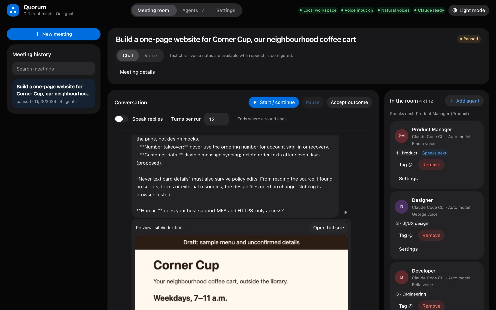
After a full round: get a prompt for Claude, build it here, or go round again.
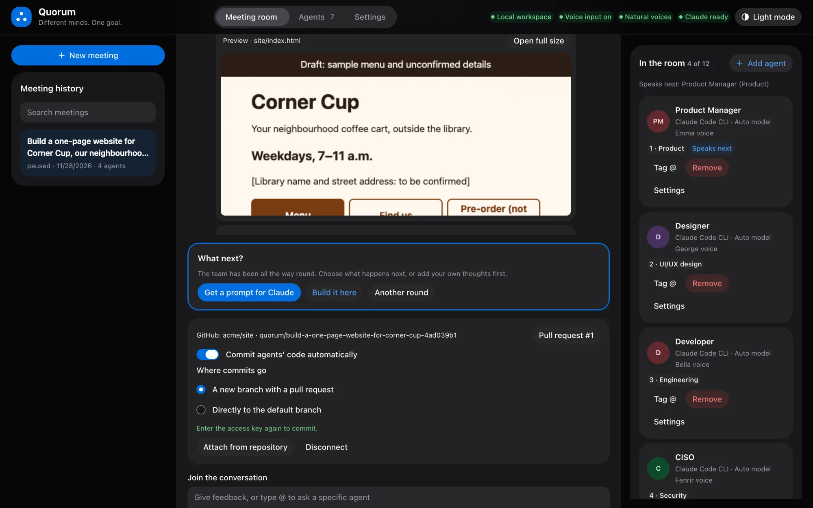
One agent’s model writes it, and Quorum appends the proposed files up to a size limit. Read it, then copy or download it.
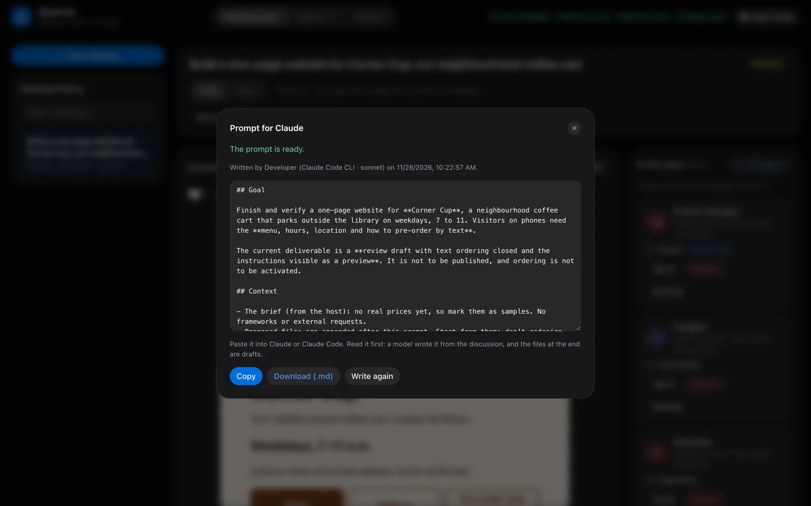
One pass by the room: design, code, a security review and a summary. Save the files to a folder, or push them.
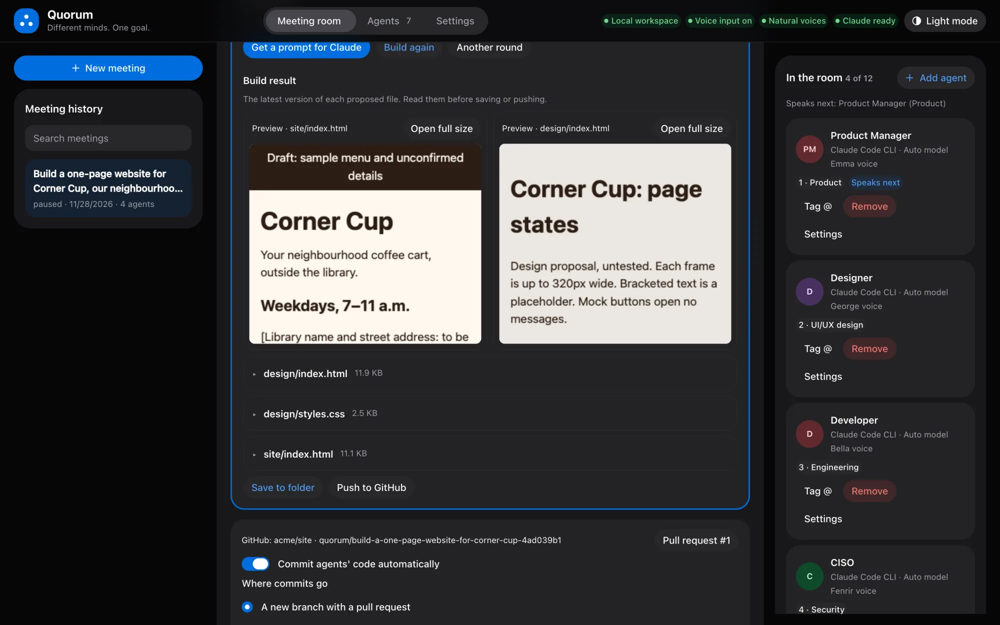
Web pages and SVG drawings preview at desktop or phone width. Scripts stay off and nothing loads from the network.
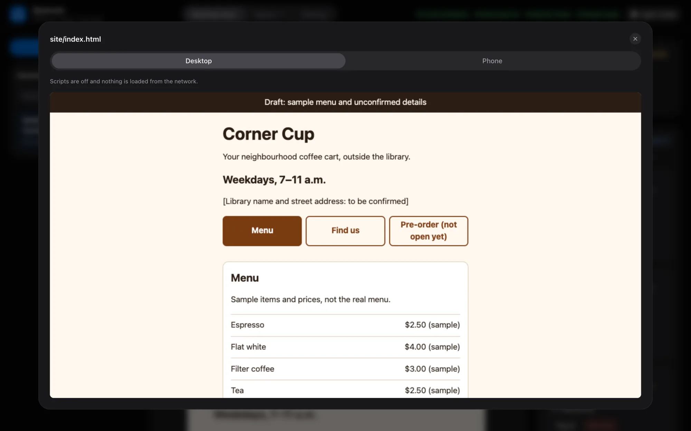
Real model replies. acme/site is a local stand‑in: nothing was sent to GitHub.
A Product Manager, a Designer, a Developer and a CISO took one goal round the room and wrote a page for a coffee cart.
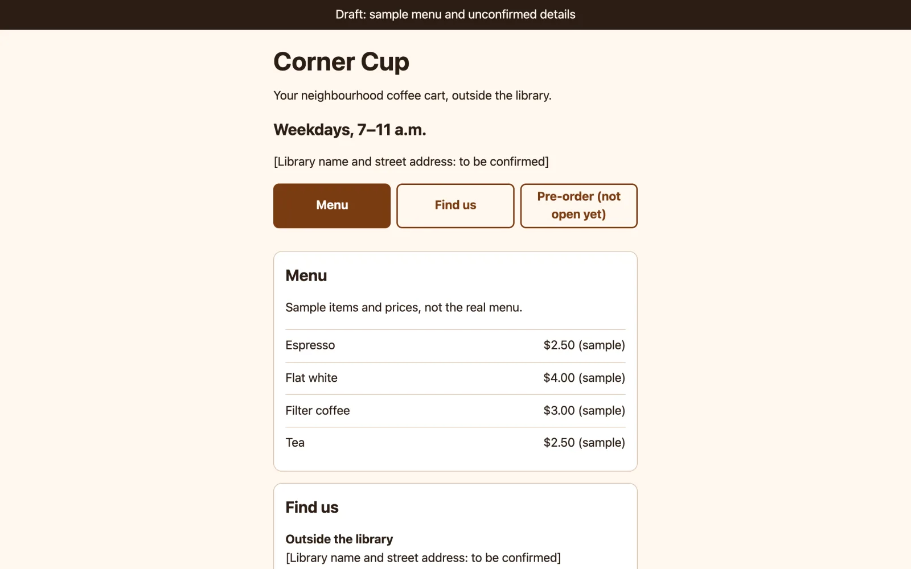
It is a draft and says so itself: sample prices and a placeholder address. File work needs a capable model; a small local one may not produce usable files.
Connect a meeting to a GitHub repository with an access key. Automatic commits start switched on: each reply that adds or changes files is committed at once, during a build too, without you reviewing it first.
quorum/your-goal-id
One branch for the meeting. Later commits move it forward, never by force. The default branch is not changed.
your-default-branch
You confirm the repository and branch, with a key typed into the page. Nobody reviews these commits: they are live at once.
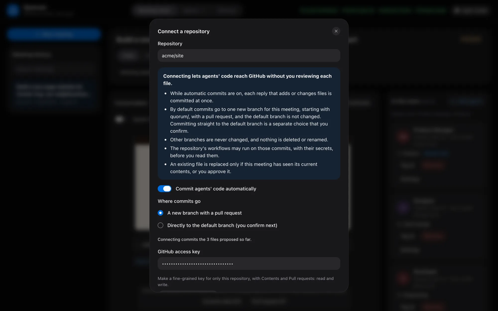
Connecting spells out what it allows.
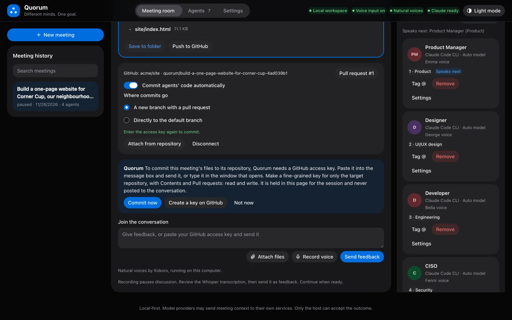
The chat asks for a key when it needs one.
Screens from one run with real model replies. The repository acme/site is a local stand‑in: nothing was sent to GitHub. The pull request number on screen is not a real one.
Held in the open page’s memory, never in browser storage or the database. Your local server uses it for each GitHub request. Reloading forgets it.
A repository’s workflows can run on these commits, with their secrets, before you have read them. Connect only where that is acceptable.
An automatic commit replaces one only if the meeting has seen its current contents, or you approve it. Nothing is deleted or renamed.
Unconnected, files reach a folder or GitHub only when you choose Save to folder or Push to GitHub. A push opens a pull request.
Filter 22 ready-made specialists by group and bring up to 12 into the room, or invite the product team in one click.

Type @ and pick a name. Tagged agents answer in the order you named them, then the room pauses.

Add or remove an agent while the discussion runs. A newcomer sees the recent conversation and joins the order.
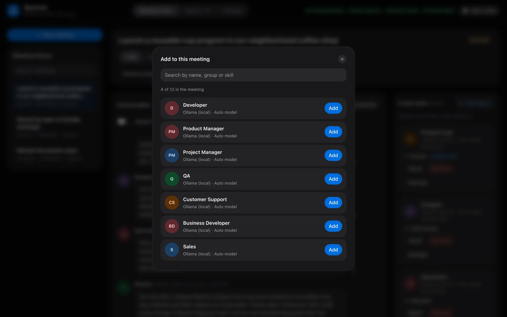
Push to talk, check the transcript, send it. With Kokoro, each agent replies in a voice of its own.
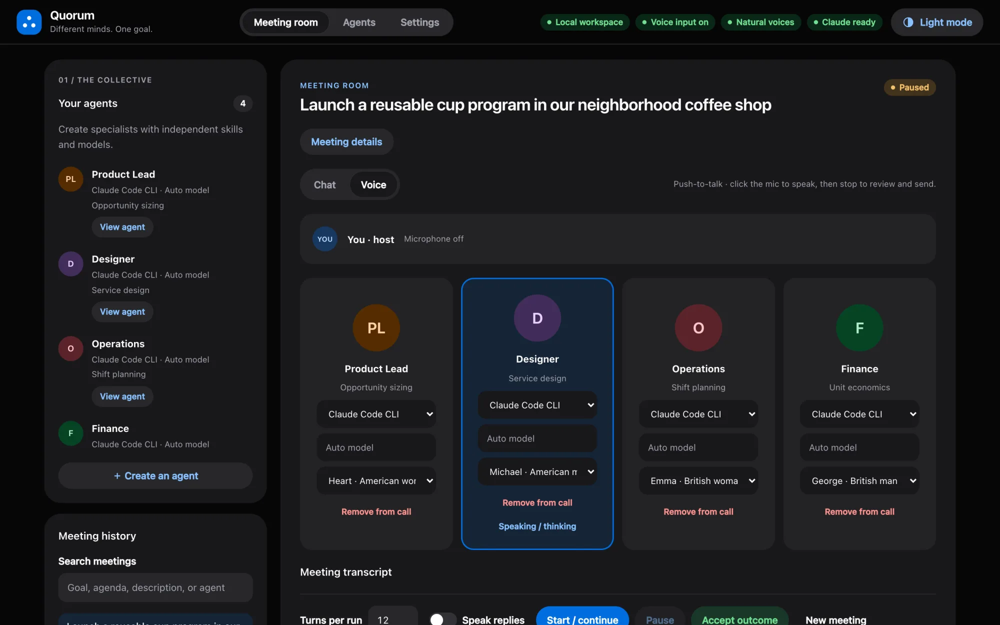
Fetch agent profiles from a GitHub repository, preview them and add them.
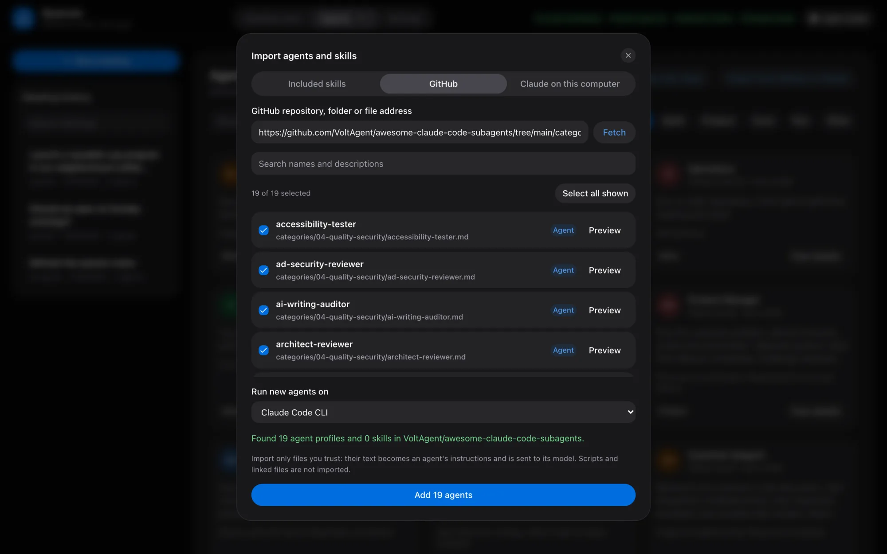
More than 200 open-source skills ship with the project. Add them to any agent.


Mix models in one room, and swap any of them in the middle of a meeting.
Open models answer on your own machine, so those turns go to no model provider. GitHub gets files only if you push or connect it.
Kokoro speaks every agent differently, on your computer. It needs a local image with the model.
Ready to invite, in four groups.
Included, with their licenses.
The most agents in one meeting.
Replies that copy earlier ones are refused.
Uses the login you already have. Meeting context is sent to Anthropic.
Uses your Codex login. Meeting context is sent to OpenAI.
Turns your voice into text locally, so you can read it before you send it.
With Docker running, this starts Quorum with a local model.
git clone https://github.com/PerDiemInc/Quorum.git && cd Quorum
docker compose up -d --build
docker compose exec ollama ollama pull qwen2.5:3b
open http://127.0.0.1:4710For your Claude Code or Codex login, run the server natively with Node 24 or use the Mac bridge. Natural voices also need a local Kokoro image. In Docker, saved files stay in the app’s volume. The README explains each.